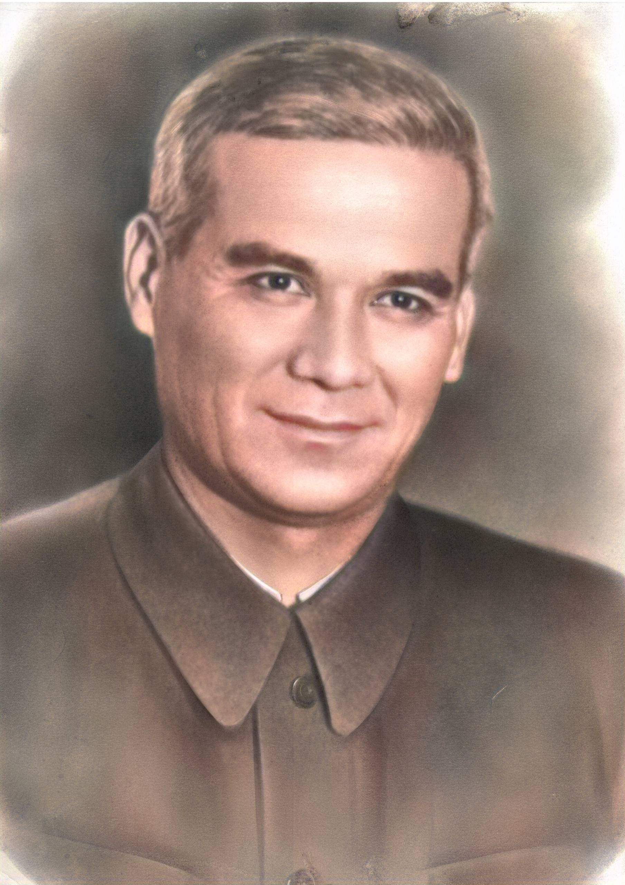
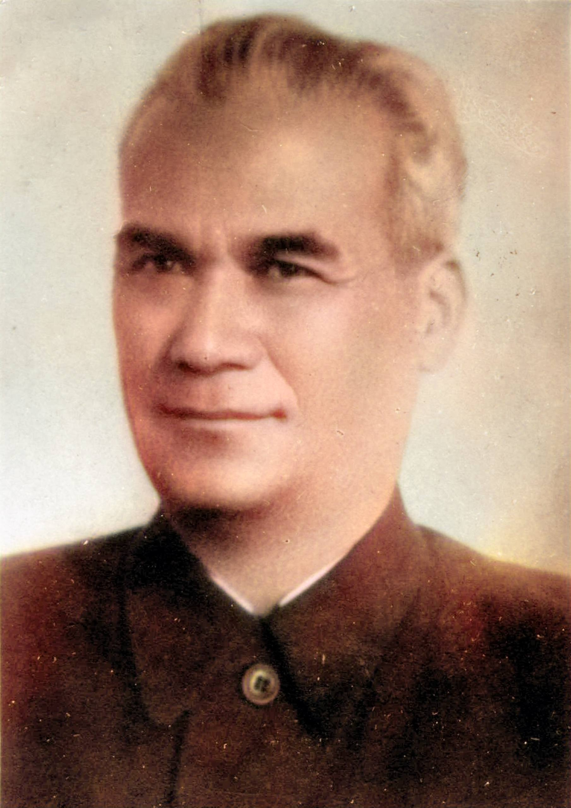
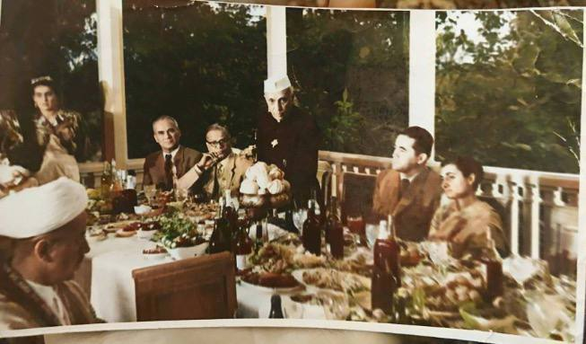
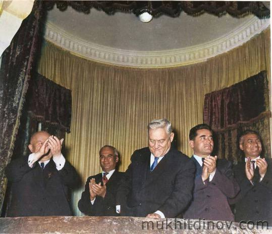
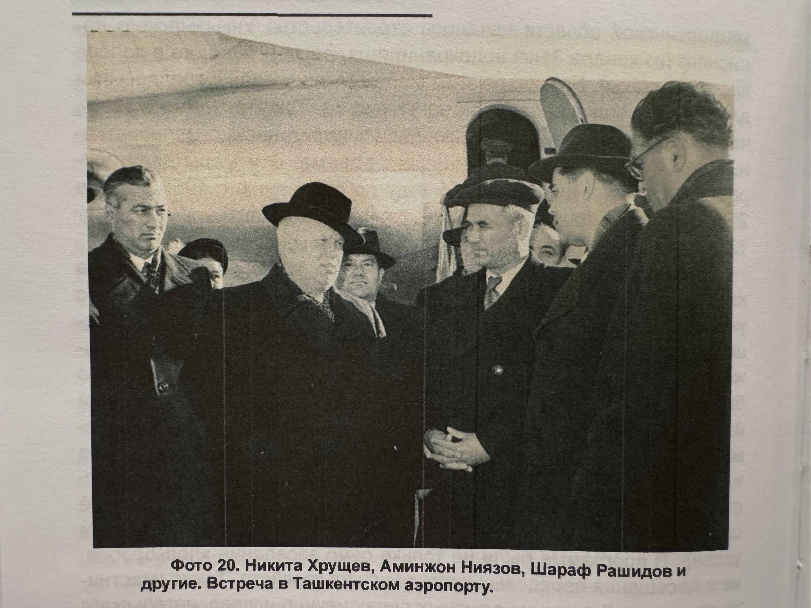
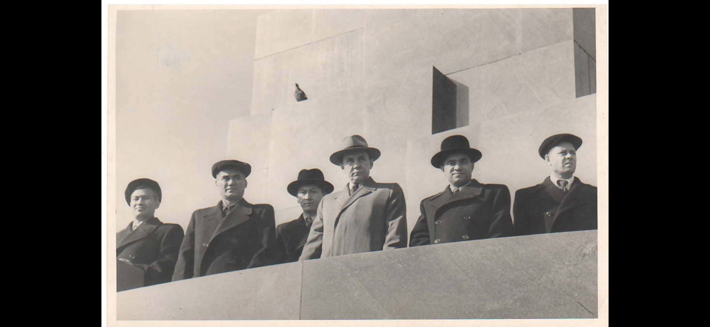
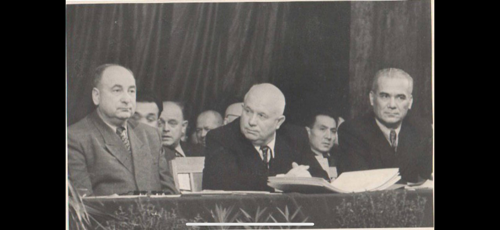

From Sharecropper's Son to Leader of a Nation
Aminjan Irmatovich Niyazov was born on 7 November 1903 in the kishlak of Ak-Tepe near Margilan, in the Fergana Valley of what was then the Russian Empire. His father, Irmat-aka, was an izdolshchik — a sharecropper who labored on the lands of wealthy bais, owning nothing of his own. From these humblest of origins, Aminjan would rise through decades of tireless service to become the de facto leader of Uzbekistan, one of the largest Soviet republics.
His life spanned the entire arc of Soviet history: from the collapse of the Tsarist empire and the chaos of civil war, through the brutal industrialization drives, the Great Patriotic War, and the complex power struggles of the post-Stalin era. At every stage, he served — not for personal enrichment, but out of an unshakeable conviction that the children of sharecroppers deserved the same future as anyone.
He managed the finances of a wartime republic, built the irrigation infrastructure that fed millions, mechanized cotton harvests, constructed schools and hospitals, hosted world leaders — and was ultimately dismissed in a political maneuver by the very man who had once been his classmate. He bore it without bitterness and continued to serve in whatever capacity he could, until his health — broken by seventeen years without a single vacation — finally gave way.
Early Years
Young Aminjan began his education at an old-style maktab before transitioning to a modern school, where he showed early promise in physics and mathematics. But history did not allow him a peaceful childhood. The Russian Civil War brought famine to Fergana — he survived on grass and oil cake, watching his neighbors starve.
At just sixteen, in 1919, he joined the Fergana district food committee, helping distribute expropriated grain to the starving population. He then served as secretary of the Fergana city Komsomol committee, throwing himself into the revolutionary project with the idealism of youth and the discipline that would define his career.
Through the 1920s, he worked in the Turkestan Cheka and GPU — the security organs of the young Soviet state — before transitioning to financial administration. In 1926, he was appointed head of the Finance Department of the Fergana Oblast Soviet executive committee. He personally implemented land-water reform: confiscating land and irrigation channels from the wealthy bais and redistributing them to landless dehkans.
In 1925, he joined the Communist Party. By 1929, he headed the state seed fund, demonstrating the administrative competence that would carry him steadily upward.
Education & Industry
In 1930, Niyazov was sent to study at the All-Union Industrial Academy named after J.V. Stalin in Moscow — the Soviet Union's premier institution for training industrial leaders. There, crowded into a one-room apartment with his young family, he excelled in machine parts, strength of materials, and theoretical mechanics, earning only excellent marks.
Among his classmates was Nikita Sergeyevich Khrushchev — a fact that would echo through history decades later, when the same Khrushchev, now leader of the Soviet Union, would preside over Niyazov's political downfall.
After graduating in 1934, he volunteered to go as an ordinary worker to the construction of the Chirchik electrochemical combine — one of Central Asia's largest industrial projects. His competence quickly became impossible to ignore: he rose from foreman to site manager, then chief engineer, and finally head of the construction control committee under the Council of People's Commissars.
When some specialists tried to prove that Fergana's climate was unsuitable for textile and silk-reeling factories, Niyazov proved them wrong. He became one of the leaders of the Fergana textile construction program, sending approximately 900 young workers to textile centers in Russia for training. They returned to staff the new factories that transformed the region's economy.
The Great Patriotic War & Finance
In 1940, Niyazov was appointed People's Commissar (Narkom) of Finance of the Uzbek SSR. When Germany invaded the Soviet Union in June 1941, this administrative role became a matter of national survival.
Uzbekistan became one of the primary evacuation destinations for Soviet industry, population, and military production. Entire factories were dismantled, loaded onto trains, and shipped thousands of kilometers east to be reassembled and operational as quickly as possible. The scale was staggering: 280 new industrial enterprises were built and made operational during the war years. New industries appeared in Uzbekistan for the first time — aviation, machine tools, heavy industry, non-ferrous and ferrous metallurgy.
The Chkalov Aviation Factory — evacuated from European Russia — was made operational within just 42 days of arriving in Uzbekistan. Behind every one of these feats of logistics stood the financial apparatus that Niyazov commanded: allocating funds, managing budgets, ensuring that the money flowed where the war effort needed it most.
During this period, both of the Umarov family's great-grandfathers occupied the highest strategic echelon of the republic's war effort: Amin Niyazov as the financial commissar, and Gulam Bobojonov — the silkworm scientist whose parachute silk research directly served the military. Their parallel service represents one of the most remarkable family legacies of wartime Uzbekistan.
After the war, in 1946, Niyazov was elevated to Deputy Chairman of the Council of People's Commissars (later the Council of Ministers) of the Uzbek SSR — recognition of his indispensable wartime service.
Rise to Power
In 1947, Niyazov became Chairman of the Presidium of the Supreme Soviet of the Uzbek SSR — the formal head of state of Uzbekistan. In this role, he initiated the construction of the massive irrigation infrastructure that would transform the agricultural landscape of Central Asia: the Kattakurgan and Chimkurgan reservoirs, land development in Central Fergana, the opening of the Hungry Steppe, and improved irrigation systems in the Bukhara, Samarkand, and Khorezm oblasts.
In April 1950, he reached the pinnacle: appointment as First Secretary of the Central Committee of the Communist Party of Uzbekistan, succeeding Usman Yusupov. He was now the de facto leader of a republic of millions — and a member of the Central Committee of the CPSU at the all-Union level.
Achievements as First Secretary
Under his leadership, Uzbekistan reached milestones that had never been achieved before:
Mechanization was a personal priority. Between 1950 and 1955, 22,428 SHM-48 cotton-harvesting machines — manufactured at the Tashselmash factory in Tashkent — were deployed across Uzbekistan, transforming cotton harvesting from backbreaking manual labor into mechanized production.
He built 42 new schools and ensured they were supplied with textbooks and materials. He organized state-funded meals for 1,000 boarding school children. He established the Medical Institute in Andijan, the Institute of Regional Medicine, and the Research Institute of Oncology and Radiology. He built power stations — the Namangan HPP, the Bukhara diesel station, the Karshi thermal plant, the Angren GRES — and an auto-repair factory in Andijan.
He created "Suburban Zones" around cities to ensure the urban population had reliable access to fresh vegetables and dairy. He purchased 3,000 pedigree heifers from abroad to improve livestock quality. He secured higher procurement prices from the USSR government for Uzbekistan's key exports: cotton, karakul pelts, and silk.
Foreign Policy
Working with Molotov, the USSR's Foreign Minister, Niyazov helped establish contacts with leaders of the 29-nation Bandung Conference of non-aligned states. He organized the first visits to the Soviet Union — and specifically to Uzbekistan — by Jawaharlal Nehru and his daughter Indira Gandhi in 1955, as well as U Nu, the Prime Minister of Burma. He also helped arrange the official Soviet delegation's reciprocal visits to India, Burma, and Afghanistan.
The Cotton Crisis & Fall from Power
On December 22, 1955, Niyazov was dismissed from his position as First Secretary at an Extraordinary Plenum of the Central Committee, following a visit by Nikolai Bulganin and Nikita Khrushchev. The official reason: failure to sufficiently increase cotton production.
The deeper reasons were political. In the post-Stalin power struggles, Khrushchev was consolidating control and replacing republic-level leaders with loyalists. Niyazov had refused to join any faction or political grouping. He had not supported Khrushchev's political intrigues — a fact that, for his former classmate now wielding supreme power, was reason enough for removal.
That same day, he was appointed Minister of Municipal Economy of the Uzbek SSR — a dramatic demotion from leader of the republic to a mid-level ministerial post. He was succeeded as First Secretary by Nuritdin Mukhitdinov. The cotton politics that led to his dismissal foreshadowed the much larger "Uzbek Cotton Affair" scandal of the 1970s–80s, which would consume his eventual successor Sharaf Rashidov.
In his diminished role, Niyazov characteristically found a way to serve. As Minister of Municipal Economy, he pioneered the supply of natural gas to Uzbekistan's residential population for the first time in the republic's history — a quiet but transformative achievement that improved the daily lives of millions. In retirement, he helped plan and build the Tashkent–Kokand highway.
Legacy & Historical Significance
Aminjan Niyazov's biography is a mirror of the Soviet century. He was born into the feudal poverty of Central Asia and died in a Tashkent that he had personally helped transform into an industrial and cultural center. He survived the purges that consumed many of his contemporaries — including Akmal Ikramov, the very man who had once offered him the chance to study in Germany.
His irrigation infrastructure — the Kattakurgan and Chimkurgan reservoirs, the Hungry Steppe development, the canal systems across Bukhara, Samarkand, and Khorezm — physically reshaped the landscape of Central Asia. The factories he helped build during the war laid the industrial foundation of modern Uzbekistan. The mechanization of cotton harvesting freed tens of thousands from manual labor.
He was not a revolutionary romantic or a political operator. He was, in the most literal sense, a builder — of factories, reservoirs, schools, hospitals, power stations, and highways. His last honor, awarded just weeks before his death in November 1973, was the title "Honored Builder of the Uzbek SSR." It was, perhaps, the most fitting recognition he ever received.
He died on 26 December 1973, in Tashkent, at the age of seventy.
Awards & Honors
- Two Orders of Lenin
- Three Orders of the Red Banner of Labour
- Two Orders of the Red Star
- Honored Builder of the Uzbek SSR (1973)
- Honorary Diploma of the Government of Uzbekistan (Land Reform)
Photo Gallery
Rare photographs from the family archive and published memoirs, documenting key moments in Amin Niyazov's life and the leaders he worked alongside.







Family Legacy
Aminjan Niyazov's wife, Salimakhon Niyazova, was described by the family as "the keeper of the family hearth, his faithful helper and reliable support" through decades of war, political upheaval, and tireless public service.
Together they raised four children, each of whom pursued professional careers in service of their republic:
Aminjan Niyazov is the great-grandfather of the Umarov family. Through his grandchildren, the Niyazov and Umarov families became joined — uniting two lines of service: the Niyazov line of statesmanship and the Bobojonov line of science. Both great-grandfathers — Amin Niyazov and Gulam Bobojonov — served at the highest levels of the Uzbek SSR during the Second World War, a convergence of duty that defines the family's heritage.